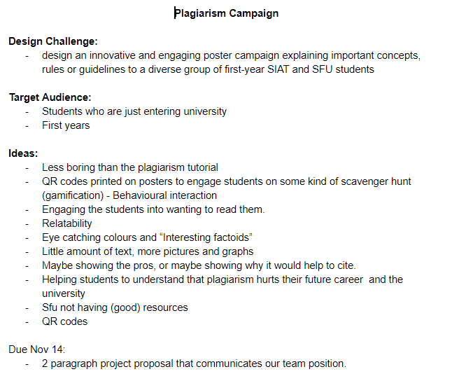
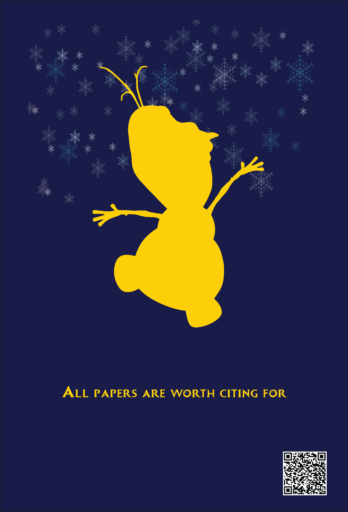
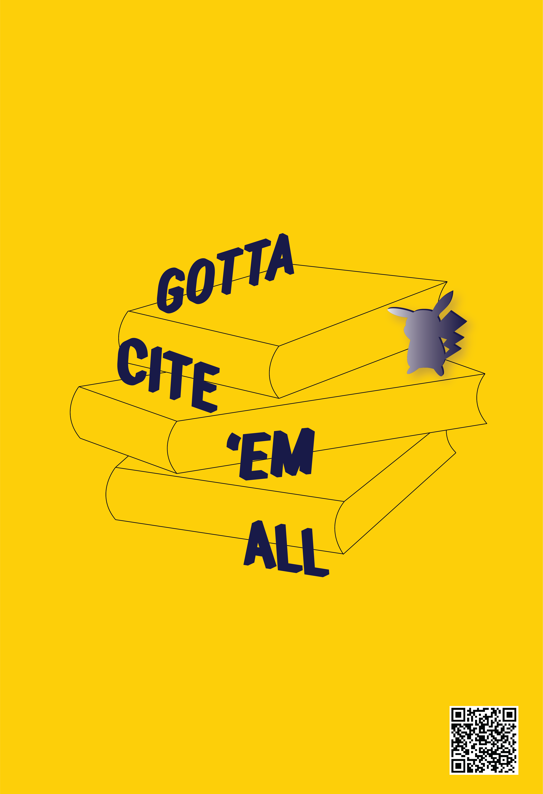
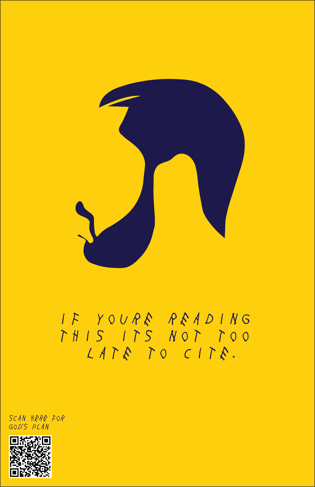

For my first process analysis I wanted to focus on my video project from IAT 202 - Moving Images because it showcases how well my team and I went from a rough draft into a more comprehensive story. At first all that we knew we wanted to do was have two sisters where one wasn’t real. That was the beginning of our story. From there, we started thinking more about how there needed to be some ability for time to pass and for the audience to get to know our characters.
The first slide is our logline process and showing how we went about thinking of how to talk about our story without giving it away.
We also wanted to make sure that our audience could pick up on the secret without us needing to spell it out and we wanted to provide rewatchability. We did this through hidden messages throughout the film. Not all of them made it in the film, but the rough ideas are in the slides
During this project, I learned that not everything ends up going the way that you want them to
and you need to be able to adjust your goals and your schedule. We had multiple delays in filming
and these things were accounted for by us and we were able to work around them. We ended up with a
film that I'm very proud of.
For this second process analysis, I wanted to focus on something that’s more solid and something that required teamwork again because I find that teamwork showcases the best in what people work on. So, for this one I decided to go with my IAT 103W campaign posters. This work was done in a team where we all worked together to come up with an idea as well as figure out how we’re going to implement it in such a way that it all makes sense. We were given the task of designing a poster about citation. I had an idea to focus on pro-citation rather than anti-plagiarism because positive reinforcement tends to go over better than negative.

Provided here are some of the ideas that we came up with as well as some brief ideation.
Further on in this document there are more items. One of the things that we all
agreed on though is that we wanted something simplistic and we wanted something that would draw the eye of people.
One of the things that we were also thinking about is some sort of
“gamification” to make reading the posters more enjoyable and easier to look at
because it removes text. We also wanted to have some sort of quote from a movie or
some play on a famous quote from a movie due to its immediate recognition as well as
its ability to connect with different parts of the brain.
In this project, I learned how to work together with people who I never knew before and how to make posters work well.
These things helped me be able to come up with ideas that are useful and helpful for the topic that we need to focus on.


